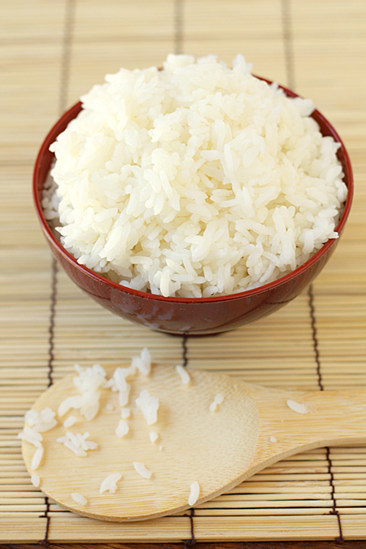

Sushi Rice

Description
This is one of the easiest ways to make sushi rice at your home! This will
greatly complement with the sushi recipe post which you probably visited,
or can visit from here.
Ingredients
Steps
-
Place the rice and water into a rice cooker. Cook the rice.
-
When the rice has finished cooking, evenly pour the seasoned rice
vinegar all over the rice. Toss the rice around to further distribute
the rice vinegar, taking care to be gentle, and not mash the rice.
It is now ready to be used for sushi.